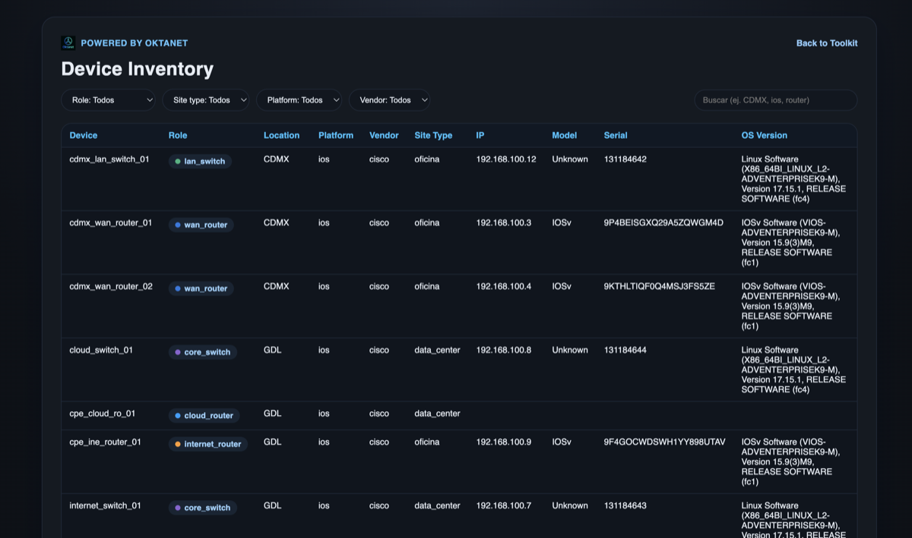

Discovery multivendor
Recolecta y normaliza datos de red para una base operativa consistente por sitio, role y dispositivo.
Network automation segura y auditable
Oktavia combina un Automation Engine (FastAPI) y una UI web simple (Django + SQLite por default) para ejecutar flujos de red con control, trazabilidad y evidencia exportable.
Compatible con infraestructura multi-vendor:
Producto principal
Diseñada para despliegues simples y demos, con arquitectura preparada para backend externo, Oktavia integra discovery multivendor, compliance por sitio/dispositivo y config generation intended en una sola consola.
Capacidades de la plataforma
Recolecta y normaliza datos de red para una base operativa consistente por sitio, role y dispositivo.
Evalúa cumplimiento por sitio/dispositivo con reglas editables y evidencia exportable para auditoría.
Genera configuraciones desde templates Jinja y service vars sin aplicar cambios directos no controlados.
Combina inventario técnico, métricas operativas e historial para análisis de tendencias y operación diaria.
Visualiza red física/control-plane y compara snapshots para detectar drift y cambios propuestos.
Programa runs, descarga artifacts por job y automatiza flujos vía API extensible con endpoints de soporte.
Desde compliance y config generation hasta topología, routing e inteligencia IP, cada módulo produce resultados accionables.

Capacidades destacadas
Estos tres módulos aceleran diagnóstico, reducen riesgo de cambio y mejoran trazabilidad en cada ejecución.
Centraliza métricas, tendencias e historial para detectar anomalías y priorizar acciones de forma proactiva.
Compara snapshots por dispositivo para identificar desviaciones, validar impacto y proponer cambios con evidencia.
Produce configuraciones desde templates Jinja y service vars, manteniendo control antes de cualquier remediación.
Modelo de ejecución
Recolectamos y normalizamos estado de red por site/device para construir una línea base confiable.
Ejecutamos tests contra reglas editables para identificar desvíos y priorizar remediación controlada.
Generamos artifacts versionables (JSON/CSV/CFG) antes de cualquier cambio en infraestructura.
Aplicamos cambios solo con control operativo, trazabilidad completa y seguimiento de drift.
Casos de uso
Evalúa cumplimiento por sitio o dispositivo sin procesos manuales y con evidencia exportable.
Genera configuraciones desde templates y service vars para reducir riesgo operativo en cambios.
Visualiza inventario, topología, routing y tendencias para acelerar diagnóstico y priorización.
Impacto medible
Métricas de referencia en equipos que migran de procesos manuales a flujos controlados con artifacts.
menos tiempo en revisiones manuales de compliance y configuración.
más visibilidad sobre desvíos y drift por sitio, rol y dispositivo.
menos tareas repetitivas con jobs programados y artifacts descargables.
capacidad de operación trazable 24/7 con validación y aprobación previa.
Arquitectura y enfoque
Oktavia no busca reemplazar un NMS de monitoreo en tiempo real. Su foco es estandarizar discovery, compliance y generación de intended configs con un modelo de ejecución controlado y trazable.
La arquitectura separa UI y Automation Engine para facilitar despliegues simples (SQLite por default) y evolución a backends externos sin perder compatibilidad de API ni trazabilidad de artifacts.
Cada fabricante se integra con adapter de discovery, normalizador, reglas de compliance y templates Jinja.
Prioriza remediación supervisada con aprobación, evitando automatizaciones opacas y no auditables.
Core cubre compliance e inventario; Pro agrega observabilidad avanzada, scheduler y Digital Twin.
Conversemos
Comparte tu contexto técnico para diseñar un quickstart de discovery, compliance y config generation en tu entorno actual.
Torre de Oficinas, Downtown Reforma
Ciudad de México